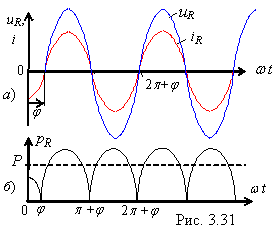

| Анализируя мгновенную мощность (рис. 3.31, а) в резистивном элементе R, т. е. , замечаем, что она знакоположительная функция (рис. 3.20, б). Это означает, что электрическая энергия источника необратимо преобразуется в элементе R в тепловую энергию. Такую мощность называют активной и измеряют в ваттах [Вт]. Степень необратимого преобразования
энергии оценивают средним значением мгновенной мощности р(t)
за период T и обозначают буквой P: Итак, активная мощность цепи синусоидального тока есть среднее значение общей мощности р(t) за период T. Она равна произведению действующих значений приложенного к цепи напряжения U и тока I, умноженному на cosφ, т. е.
|
|||